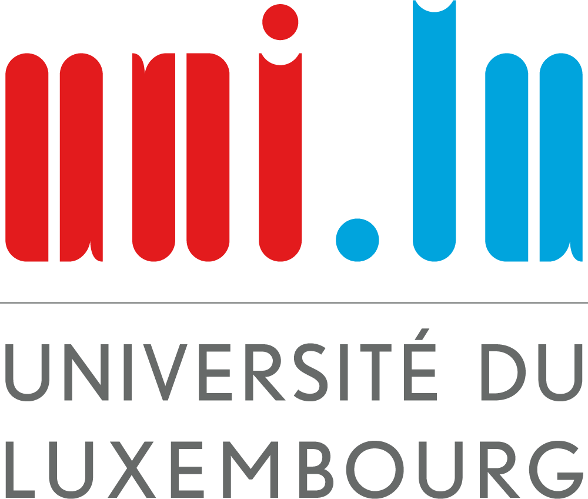

This project would not have been possible without them...
LAGERWALL Jan
The professor Jan Lagerwall introduced us to liquid crystals. Thank to him, we learned faster what they are and discovered real life applications such as on concrete.
PESTANA NAKAMURA Yosuke
The doctoral researcher Yosuke Pestana Nakamura taught us the steps in the creation of a cholesteric liquid crystal belt. This belt was the main item we used in our study.